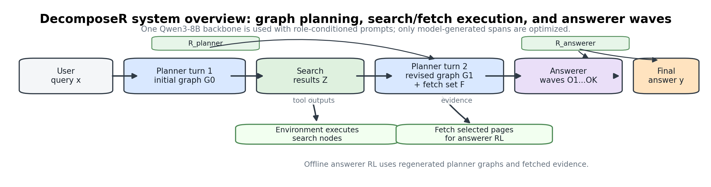
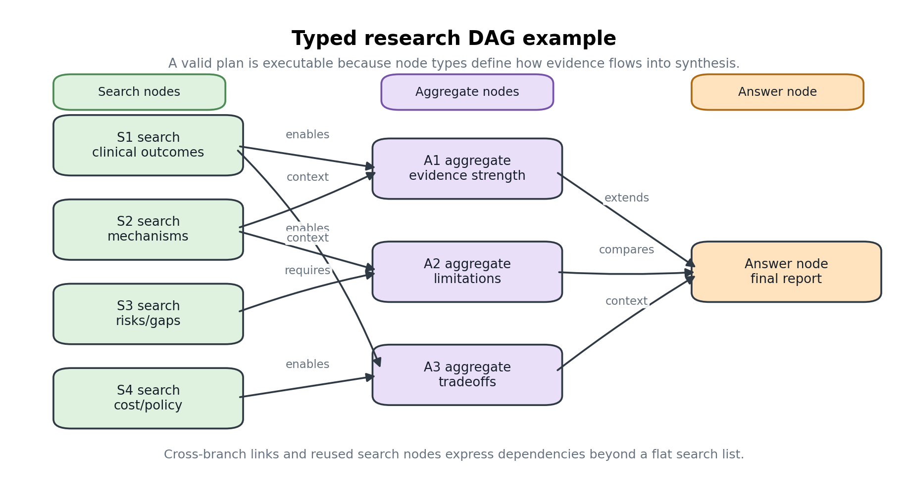
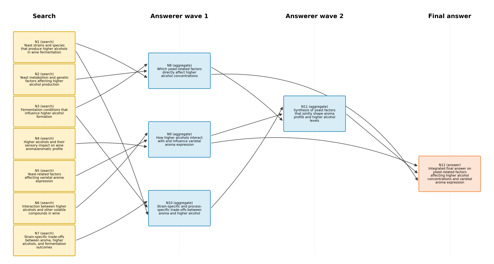
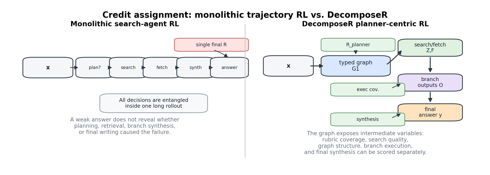
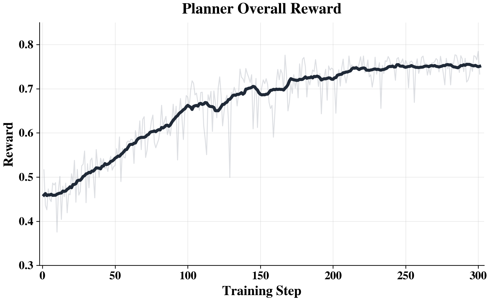
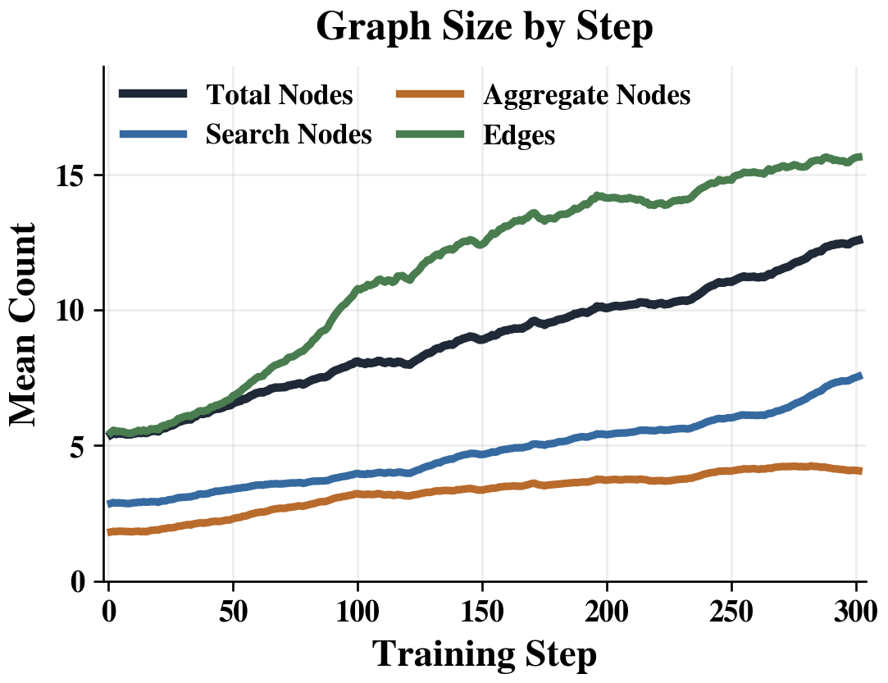
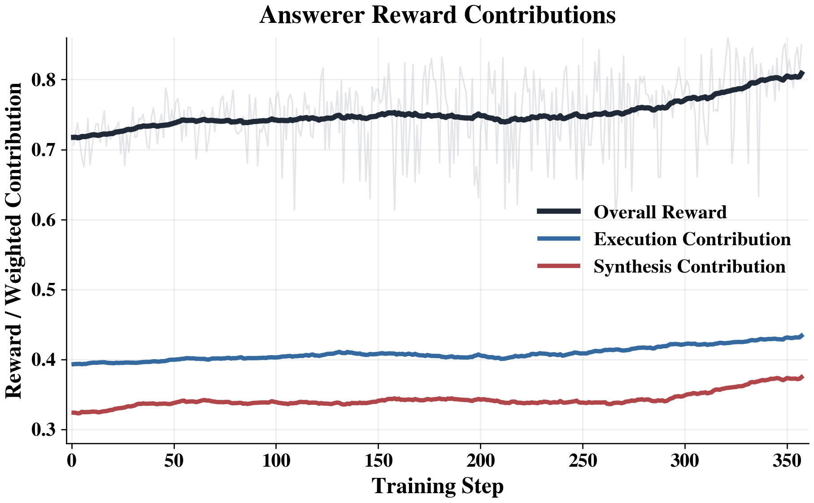
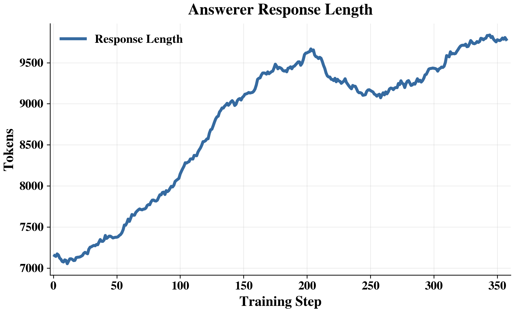

DecomposeR: Planner-Centric Reinforcement Learning for Deep Research with Structure-Aware Reward
National University of Singapore · Scalable AI Lab
Abstract
Overview
Deep research tasks require LLMs to plan what to investigate, retrieve evidence, and synthesize long-form answers across multiple branches of inquiry. Existing training paradigms either rely on short-form verifiable QA as a proxy or optimize monolithic long trajectories, which makes planning and execution difficult to disentangle and yields weak credit assignment for the planning process.
We propose DecomposeR, a planner-centric deep research framework that represents research plans as typed directed acyclic graphs (DAGs), allowing planning to be made explicit, structured, and rewardable. We train a Qwen3-8B model in two stages: planner RL first learns graph structure and query decomposition to improve research planning, and answerer RL then learns branch-level execution and final synthesis conditioned on the learned plan.
By assigning rewards to explicit planner tokens and structured components rather than to a flat trajectory, DecomposeR enables finer-grained optimization of planning while reducing the ambiguity of end-to-end training. Experiments show that DecomposeR-8B improves over strong comparable open baselines by 5.1–8.0 points on popular long-form benchmarks due to improved planning and answering capabilities.

Method
DecomposeR Framework
The core motivation behind DecomposeR is that current RL-trained deep research systems suffer from two limitations: ambiguous credit assignment — reasoning, search, evidence selection, and synthesis are interleaved in a flat ReAct-style trajectory, so a single scalar reward propagated across every action cannot identify which failure point to correct — and sparse rewards — intermediate planning and search decisions receive no direct supervision.
DecomposeR addresses both by materializing the research plan as an explicit typed DAG in which search nodes issue web queries, aggregate nodes synthesize branch-level conclusions, and a terminal answer node integrates branches into the final report. Because every plan component is individually addressable, reward can be assigned to the specific part of the research process responsible for each decision.
Rollout Structure
The DecomposeR rollout proceeds in five steps at both training and inference time:
- Initial Planning: Given a query, the planner emits an initial plan G₀ as a typed DAG.
- Initial Search: The environment executes every search node in G₀ and returns retrieved observations.
- Plan Revision: The planner consumes the search results and emits a revised plan G₁ together with a small fetch set of high-value URLs.
- Conditional Search: The environment runs only newly added or modified search nodes in G₁, reusing observations from unchanged nodes.
- Answer Generation: The answerer fills aggregate nodes of G₁ in topological waves and produces the final citation-grounded report at the answer node.


Plan Representation
Typed DAG Structure
The research plan G is a typed DAG with three node types. Search nodes carry a query string and a list of key points specifying what evidence the query should return. Aggregate nodes carry a synthesis brief — a need statement and key points to be covered in output. The single answer node v_ans carries the final synthesis brief and has no outgoing edges. A directed edge u→v declares that the output of u is consumed by v.
A validator enforces that G is a connected DAG with valid JSON syntax, valid node IDs, allowed node types, no cycles, and exactly one v_ans. Invalid graphs are rejected at a validity gate before reward computation — this ensures protocol correctness is established before quality signals take effect.
Given a valid G₁, the answerer executes it wave by wave. A wave contains all aggregate nodes whose parents have already been completed; all nodes in a wave are generated in a single model turn, exploiting conditional independence of same-wave aggregates given their parents. This topological-wave execution preserves dependency order while minimizing model turns.
Why a Typed DAG?
A typed DAG with search-, aggregate-, and answer-type nodes makes cross-source evidence reuse and hierarchical synthesis explicit at the structural level — both of which linear lists and tree-structured plans cannot natively express. The structure exposes well-defined properties (branch breadth, cross-branch integration, query distinctness) as addressable units that planner reward can target directly.

Training
Staged RL Training
The planner and answerer are trained sequentially atop a shared Qwen3-8B backbone with role-conditioned prompts and role-specific LoRA adapters. Training proceeds in three phases.
Cold-Start SFT
A frontier teacher model generates complete planner-answerer trajectories for training queries. Only trajectories passing the graph validator and answerer parser are retained. Both adapters are jointly initialized on these curated turn-level examples.
Planner RL
The planner adapter is refined with a reward over three dimensions: Rubric Coverage (plan nodes semantically anticipate query-specific criteria), Search Quality (search nodes target right aspects and avoid redundancy), and Graph Expressiveness (synthesis breadth, cross-branch integration, search breadth). A hard validity gate ensures zero reward for invalid graphs regardless of semantic content.
Answerer RL
With the planner adapter fixed, the answerer adapter is refined to execute plans faithfully and synthesize high-quality reports. Answerer reward combines Branch-Level Execution Fidelity (whether each aggregate node covers declared key points) and Global Synthesis Quality (whether the final answer integrates branches and satisfies rubric). Both phases use GRPO with token-level masking.
Why Decouple Planner and Answerer?
Collapsing planning and answering into one policy under a single trajectory-level reward conflates their failure modes. By training the two roles sequentially, Planner RL optimizes rewards that depend only on the revised plan G₁ and never on answerer output, so plan quality is isolated from execution noise. Answerer RL then trains against a fixed planner, so answerer credit is not confounded by drifting plan quality. Staging also reduces the non-stationarity inherent to jointly training two policies.




Results
Benchmark Performance
DecomposeR-8B (SFT + Planner RL + Answerer RL) is evaluated on three long-form deep research benchmarks: DeepResearchBench (DRBench), HealthBench, and ResearchQA-Mini. All benchmarks evaluate long-form research responses requiring multi-step retrieval, evidence synthesis, and citation grounding.
DecomposeR-8B vs. Open Baselines
| Model | DRBench | HealthBench | ResQA-Mini | Average |
|---|---|---|---|---|
| DecomposeR-8B (SFT + RL) | 41.8 | 42.0 | 71.4 | 51.7 |
| DecomposeR-8B (SFT only) | 36.3 | 39.1 | 63.8 | 46.4 |
| Qwen3-8B + Search | 34.4 | 19.8 | 57.0 | 37.1 |
| WebThinker-32B-DPO | 37.7 | 38.5 | — | — |
| Tongyi DeepResearch-30B | 38.6 | — | 67.2 | — |
Conclusion
Key Takeaways
Structured plans are optimizable
Representing research plans as typed DAGs creates addressable units that reward can target directly, confirming that explicit structure is a useful optimization target for deep research systems.
Staged training isolates failure modes
Separating planner RL and answerer RL prevents confounding: planner credit is never polluted by execution noise, and answerer credit is not confounded by drifting plan quality.
Efficient at 8B scale
DecomposeR-8B achieves competitive or superior performance to models 3–4× larger (WebThinker-32B, Tongyi DeepResearch-30B), demonstrating that improved training methodology can compensate for smaller model scale.
Structure-aware reward reduces sparsity
Distributing reward signals across plan components rather than relying on a single trajectory-end scalar reduces reward sparsity and stabilizes credit propagation across long deep-research trajectories.